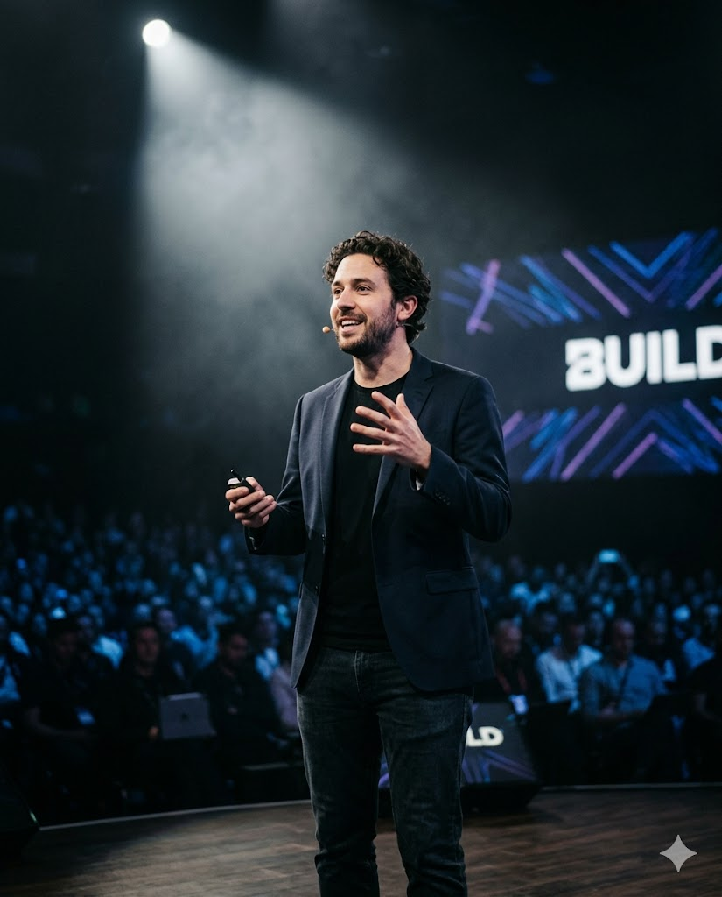

I'm DevOrbit
Freelance DevRel & Developer Advocate helping tech companies build better products for developers. With over 10 years of experience in engineering and community building, I bridge the gap between code and people.
I believe that great developer experience (DevEx) isn't just about good APIs—it's about empathy, education, and empowering developers to do their best work.
Download ResumeMilestone
Lead Developer Advocate
Helping Scale-Up SaaS companies define their DevRel strategy and build thriving developer communities.
Senior DevRel Engineer @ InfraTech
Launched 3 major SDKs and grew the ambassador program from 0 to 500 members globally.
Full Stack Engineer
Built core infrastructure for cloud-native platforms while contributing to internal DevRel initiatives.
Where Work
Meets Impact
From conference stages to community Discord servers, my work happens everywhere developers gather. I show up, listen, and help teams build things developers actually love.
The best DevRel isn't a job title — it's a mindset that puts developer success at the center of every decision.

Core Values
Empathy-First
Every line of documentation and every sample app should be built with the developer's journey in mind.
Community Over Code
Strong communities drive better products. I prioritize building genuine connections over transactional metrics.
Teach to Learn
The best way to master a technology is to teach it to others. I'm constantly learning through advocacy.